Manuale software IsoCam
Una pubblicazione di Donatoni Macchine S.r.l.
Versione Software: 1.0
Versione Manuale: 0.0
Data:
Generalità
Le informazioni contenute in questo documento sono applicabili solamente alle versioni software riportate nel frontespizio.
È possibile che non tutte le funzioni esplicabili dal prodotto siano descritte nella presente documentazione; in questi casi Donatoni Macchine S.r.l. non è comunque obbligata a garantire queste funzioni né a preservarle nelle future versioni.
Scopo del manuale
Questo manuale riporta le istruzioni d’utilizzo necessarie per la buona conoscenza del programma Isocam e informazioni utili per trovare soluzioni a malfunzionamenti.
Dall'osservanza di quanto descritto in questo manuale dipende il regolare funzionamento, la durata e l'economia di esercizio della macchina stessa.
Il manuale d’uso e manutenzione della macchina e il presente manuale software devono essere sempre reperibili nel luogo d’installazione dell’impianto, in posto sicuro e facilmente accessibile. Se uno di essi viene smarrito contattare il responsabile del servizio prevenzione e protezione.
La mancata osservanza di quanto descritto in questo manuale, la negligenza, un cattivo e inadeguato uso della macchina, possono essere causa di annullamento, da parte della Ditta Costruttrice, della garanzia che essa dà alla macchina stessa, ed inoltre si possono non ottenere i vantaggi per cui questa macchina è stata costruita.
La DONATONI MACCHINE SRL, è comunque a disposizione per assicurare una pronta ed accurata assistenza tecnica e tutto quanto può essere utile per il miglior funzionamento ed ottenere il massimo della resa dalla macchina.
La Ditta Costruttrice, si riserva il diritto di modificare, a propria discrezione, la presente pubblicazione ed i dati in essa contenuti qualora lo ritenesse necessario per un miglioramento tecnico o commerciale del prodotto.
Conservazione del manuale
Il presente Manuale Software deve essere custodito per tutta la vita operativa della macchina, anche in caso di cessione a terzi.
Al fine di conservare correttamente il Manuale Software si raccomanda:
Impiegare il Manuale in modo tale da non danneggiare tutto, od in parte, il contenuto; in particolare si raccomanda di non abbandonare il Manuale durante l'utilizzo e di riporlo nel luogo assegnato immediatamente dopo il termine della consultazione;
Non asportare, strappare o riscrivere per alcun motivo le parti del Manuale;
Conservare il Manuale in zone protette da umidità, calore ed altri agenti ambientali che potrebbero pregiudicarne l'integrità o la durata;
In caso di smarrimento o danneggiamento di tutto o parte del contenuto del presente Manuale, richiedere copia di tale documentazione al Costruttore.
Utenti
Questo documento contiene informazioni rivolte a:
Operatore macchina
Tecnico autorizzato ad effettuare assistenza
Uso del documento
Il documento è suddiviso in capitoli che descrivono:
Conoscenza della struttura software
Funzioni della macchina in modalità manuale
Funzioni da touch screen
Diagnosi e soluzione degli allarmi
Notifica dei problemi
Per gli eventuali problemi che si dovessero presentare durante lo studio di questo documento, contattare il servizio assistenza Donatoni Macchine S.r.l.
IsoCam è il software per l’esecuzione di sagomature con il disco; permette di disegnare o importare sagome, decidere il profilo e applicare diversi modi di lavorazione.
La gestione della programmazione del lavoro viene divisa in diverse fasi, descritte nelle pagine subordinate.

Elementi comuni tra i vari step
L'interfaccia utente è composta da diverse aree.
Menù: utility rapide.
Barra superiore: funzioni specifiche della pagina attiva.
Parte centrale: contiene il disegno o l’area attiva in base alla pagina.
Barra laterale: finestra contenente i parametri da modificare.
Barra inferiore: pulsanti generalmente validi in diverse aree del software.
I seguenti elementi rimarranno sempre visibili, indipendentemente dalla fase corrente del processo.
Menù
La barra dei menù è collocata in alto, al di sopra di ogni altro elemento di questa interfaccia.
Visualizza | Vengono messe a disposizione dell’operatore alcune impostazioni relative alla visibilità dei pezzi presenti nell’area di lavoro. |
Opzioni | È possibile modificare impostazioni relative ai colori. |
Lingua | ISOCAM è attualmente disponibile nelle seguenti lingue:
|
Barra laterale destra
Impostazioni | |
 | Info |
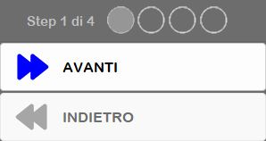 | Gestione Step |
 | Chiudi |
Impostazioni
Questo pannello permette di passare alla modalità Avanzata di IsoCam, di tornare alla versione base, e di modificare i valori di Passo Griglia in X e Y.

Barra inferiore
Comprende i comandi comuni per gestire la lavorazione corrente.
 | Nuova lavorazione |
Apri lavorazione | |
Salva lavorazione | |
Modifica lavorazione |
La prima fase della programmazione consiste nel disegno della sezione da lavorare. La finestra propone i comandi caratteristici di un software CAD: disegno linea, disegno arco, snap, sposta, ecc.
L’idea alla base del software è la creazione della sezione come veloce schizzo che verrà poi modificato, entità per entità, con gli appositi comandi. Rimane sempre attiva la possibilità di importare disegni .dxf generati da CAD esterni.
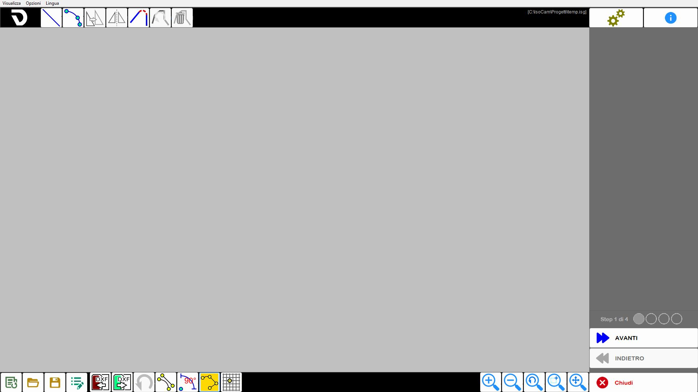
Procedura base
Premere il pulsante Nuova lavorazione.
Verificare che la funzione Tratti connessi sia attiva.
Attivare il comando Linea.
Fare una sequenza di click sull’area di lavoro per disegnare la sezione.
Al termine premere sul comando Linea per disabilitarlo.
Selezionare poi entità per entità e controllare/modificare i parametri.
Barra superiore
Questa barra è collocata nella parte superiore dell’interfaccia e permette di selezionare una tra le seguenti modalità:
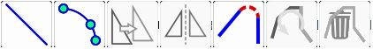
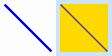 | Comando disegno Linea |
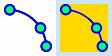 | Comando disegno arco |
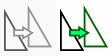 | Muove i tratti selezionati |
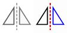 | Figura Speculare |
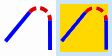 | Raccorda |
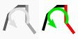 | Inversione della selezione attiva |
Elimina tratti selezionati |
Barra laterale destra
La barra laterale a destra mostra contenuti in base alla modalità selezionata nella barra superiore.
I capitoli successivi ne illustrano le proprietà.
Barra inferiore
/2.4.1-20250730-140958.png) | Importa file DXF |
/2.4.2-20250730-141038.png) | Esporta file DXF |
/2.4.3-20250730-141114.png) | Annulla modifica |
/2.4.4_Off_On-20250804-064138.png) | Snap inizio/fine |
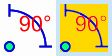 | Comando Orto |
/2.4.6_Off_On-20250804-064055.png) | Comando Tratti connessi |
/2.4.7_Off_On-20250804-064033.png) | Griglia di disegno |
Undo Zoom | |
/2.4.16-20250804-070239.png) | Seleziona selezione per Zoom |
Ripristina Zoom |
Selezionando la linea, nella parte di destra vengono mostrate le caratteristiche dell’entità selezionata, che possono essere modificate.
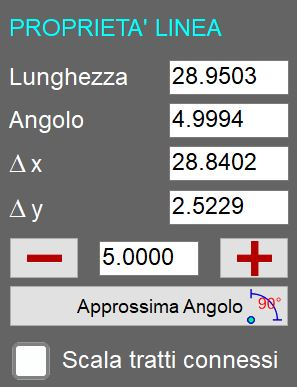
Parametri
Lunghezza | Indica la distanza lineare tra i due estremi della linea selezionata, calcolata in base alle coordinate nello spazio di lavoro. |
Angolo | Indica l’orientamento della linea rispetto all’asse orizzontale del sistema di riferimento. |
Δx | Indica la variazione della coordinata X tra il punto iniziale e quello finale di una linea o entità, ovvero la distanza orizzontale percorsa rispetto all’asse X del sistema di riferimento. |
Δy | Indica la variazione della coordinata Y tra il punto iniziale e quello finale di una linea o entità, ovvero la distanza verticale percorsa rispetto all’asse Y del sistema di riferimento. |
Allunga/Accorcia linea selezionata | |
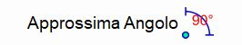 | Approssima Angolo |
Scala tratti connessi | Consente di applicare una scalatura proporzionale a tutte le entità direttamente o indirettamente collegate alla linea selezionata. |
L’arco può essere definito in diversi modi: per punti, come centro, raggio e arco, ecc. Le varie caratteristiche vengono mostrate nella finestra che appare sulla destra.
La variazione di alcune caratteristiche può essere soddisfatta in diversi modi, ad esempio cambiando il raggio o il punto iniziale/finale; per discriminare il modo di modifica è presente il flag Centro fisso.
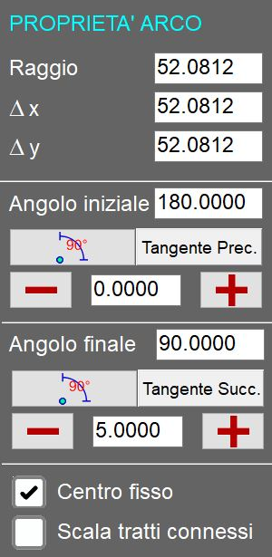
Parametri
Raggio | Distanza costante tra il centro della curva circolare o dell’arco e qualsiasi punto lungo la sua circonferenza. |
Angolo iniziale/finale | Angolo del punto iniziale o finale rispetto al centro. |
Approssima angolo | |
Tangente Prec./Succ. | Modifica l’angolo iniziale o finale in modo che l’arco risulti tangente all’entità precedente o successiva. |
Aumenta / diminuisci angolo | |
Centro fisso | Serve per decidere le conseguenze di una modifica (raggio o angolo). |
All’abilitazione del comando Sposta appare la finestra con i parametri per la movimentazione. La movimentazione può essere fatta direttamente tramite click sull’area di disegno, anche con gli snap attivi, o tramite impostazione dei parametri.
La conferma dello spostamento deve essere data con il pulsante OK.
Parametri
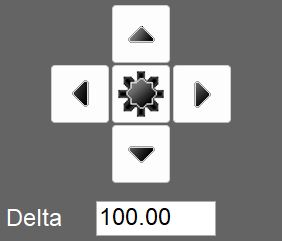 | Selettore posizione |
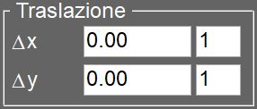 | Traslazione |
Muovi copia | Se abilitata, la funzione crea una copia dell’entità selezionata e applica lo spostamento solo a questa copia, lasciando invariata l’entità originale. |
Dopo aver abilitato il comando è necessario impostare il centro di simmetria tramite click sull’area di lavoro o impostando le quote, selezionare la direzione dello specchia e premere il pulsante OK per confermare.
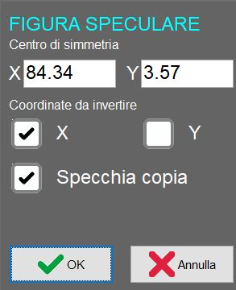
Parametri
Centro di simmetria | Consente di modificare le coordinate del centro di simmetria utilizzato per il ribaltamento orizzontale o verticale dell’entità selezionata. |
Coordinate da invertire | Indica se eseguire il ribaltamento in orizzontale, in verticale oppure in entrambe le direzioni. |
Specchia copia | Se attivata, l’operazione di specchiatura viene eseguita creando una copia specchiata dell’entità selezionata, mantenendo intatta l’originale. |
Un primo messaggio, visualizzato nella colonna di destra, consente all’operatore di impostare il raggio del raccordo e confermare la selezione.
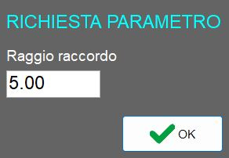
Un secondo messaggio informa l’operatore che è ora possibile inserire raccordi tra due linee, operazione disponibile fino alla disattivazione della funzionalità.
Di seguito l’esempio di applicazione di raccordi su due linee adiacenti e una linea adiacente a un arco:
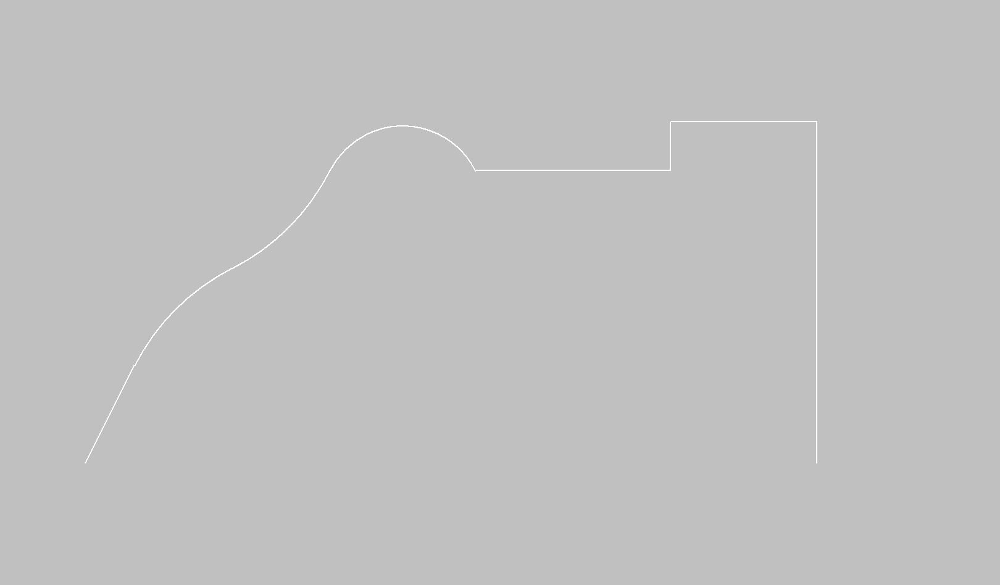
Dopo l’applicazione dei raccordi:
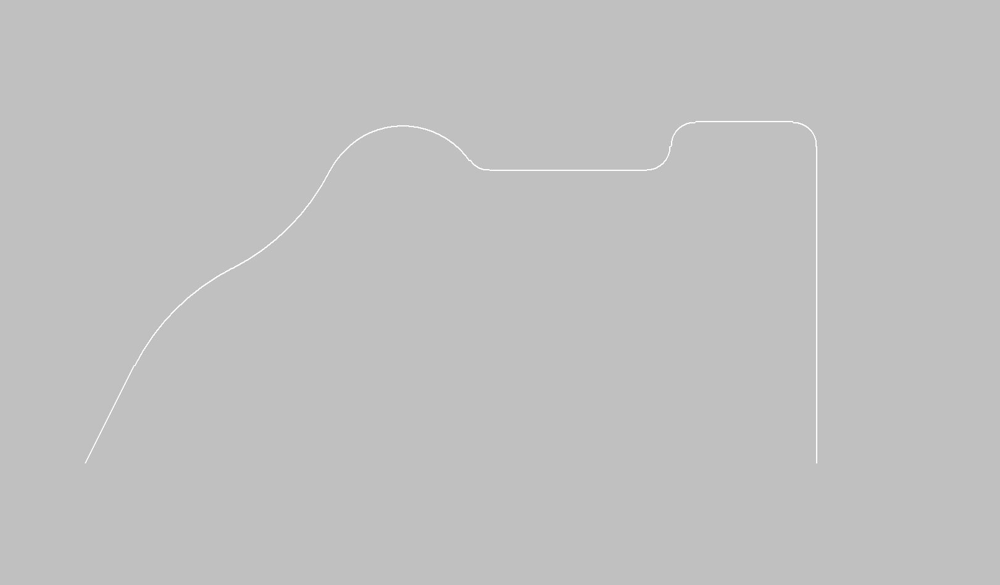
La sezione precedentemente disegnata deve essere applicata su un opportuno profilo.
Il profilo può essere lineare o ad arco, nel piano X/Y o anche verticale; in base alla selezione verranno poi abilitate o disabilitate alcune modalità di lavoro. Così, ad esempio, un profilo ad arco nel piano XY può essere lavorato solo con disco verticale e viceversa per un profilo ad arco nel piano XZ o YZ.
La tipologia di profilo viene scelta con i pulsanti sulla sinistra; al centro in alto vengono mostrati i parametri per descrivere geometricamente il profilo e nella parte centrale in basso viene mostrata l’anteprima del risultato.
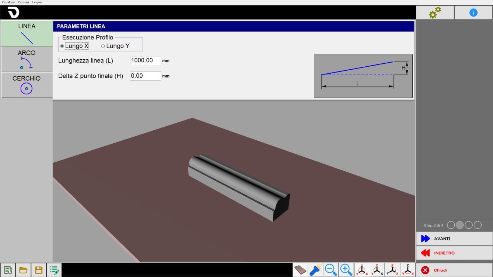
Il documento sorgente contiene indicazioni discordanti sull’orientamento del disco. Consultare la
segnalazione in Orientamento lavorazione
Profilo lineare
Si imposta la direzione e la lunghezza. Il valore Delta Z segue come segno l’asse Z: positivo verso l’alto, negativo verso il basso.
Parametri
Esecuzione Profilo | Scelta tra Lungo X e Lungo Y. |
Lunghezza linea (L) | Lunghezza orizzontale della base del tratto inclinato, misurata tra il punto di partenza e il punto finale proiettato orizzontalmente. |
Delta Z punto finale (H) | Differenza di quota tra l’inizio e la fine del segmento. |
Profilo ad arco
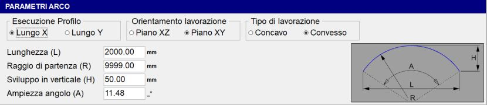
Si definiscono direzione, piano di lavoro, concavità e caratteristiche geometriche. Ogni variazione delle caratteristiche geometriche ha ripercussione su altre variabili.
Parametri
Esecuzione Profilo | Scelta tra Lungo X e Lungo Y. |
Orientamento lavorazione | Scelta del piano di lavoro previsto per il profilo. |
Tipo di lavorazione | Scelta tra profilo Concavo e Convesso. |
Lunghezza (L) | Distanza orizzontale tra i due estremi dell’arco, cioè la corda che collega inizio e fine. |
Raggio di partenza (R) | Distanza dal centro dell’arco al punto dell’arco stesso; determina la curvatura complessiva. |
Sviluppo in verticale (H) | Altezza massima dell’arco rispetto alla corda L. |
Ampiezza angolo (A) | Angolo al centro sotteso dall’arco, espresso in gradi. |
La modifica di Lunghezza, Raggio di partenza, Sviluppo in verticale o Ampiezza dell’angolo comporta il ricalcolo automatico dei parametri rimanenti.
Profilo a cerchio
Verrà lavorato solo esternamente con disco orizzontale. Il flag Carter indica se nella fase di lavoro l’asse C ruota (custodia attiva) o rimane fermo con C = 0_ (custodia non presente).
Parametri profilo a cerchio
Raggio di partenza (R) | Determina il raggio dal punto di partenza. |
Carter | Indica se durante la lavorazione l’asse C ruota oppure rimane fermo con C = 0_. |
La pagina è divisa in riquadri con diversi tipi di dati da impostare per la lavorazione.
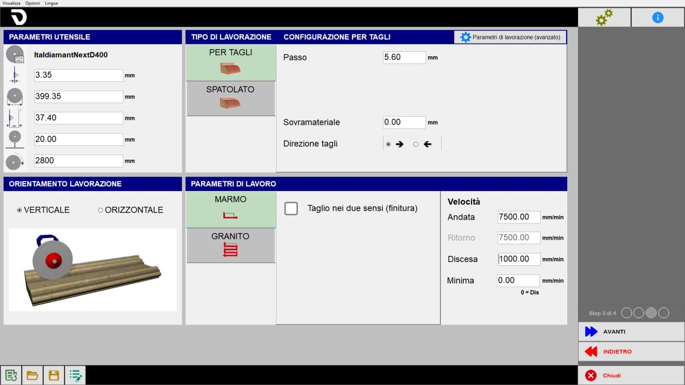
Di seguito verranno illustrate le seguenti sezioni dell’interfaccia Parametri di lavoro:
Parametri utensile | Caratteristiche dell’utensile utilizzato. |
Orientamento lavorazione | Scelta dell’orientamento del disco in funzione del profilo. |
Tipo di lavorazione | Lavorazione per tagli o spatolato. |
Velocità e modo di taglio | Selezione dei parametri di taglio. |
Parametri di lavorazione (avanzato) |
L’operatore può definire i parametri dell’utensile:
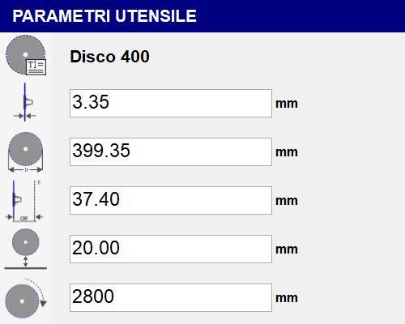
Se si tratta di un nuovo progetto i dati vengono caricati automaticamente in base all’utensile fisicamente installato;
se si tratta invece di una lavorazione precedentemente salvata, i dati dell’utensile saranno quelli già salvati nel programma precedente.
Parametri
Nome utensile | |
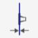 | Spessore |
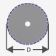 | Diametro |
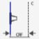 | CRF (Centro Rotazione Flangia) |
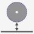 | Quota di sicurezza |
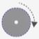 | RPM (Giri Al Minuto) |
Se si tratta di un nuovo progetto, i dati vengono caricati automaticamente in base all’utensile fisicamente installato; se si tratta invece di una lavorazione precedentemente salvata, i dati dell’utensile saranno quelli già salvati nel programma precedente.
I due profili di lavorazione sono quello Lineare e quello Arcato:
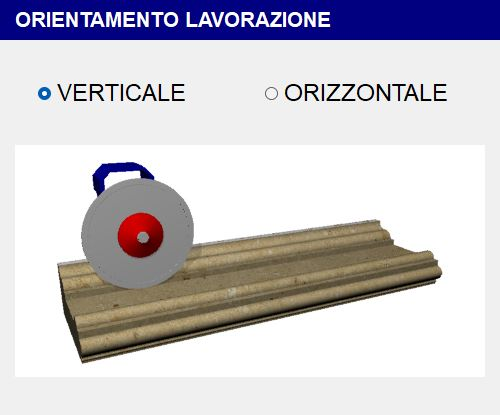
Profilo Lineare
Per profili lineari c’è la possibilità di scegliere se eseguire la lavorazione con disco in verticale o con disco in orizzontale (da fronte o da sinistra).
Orientamento Verticale | Orientamento Orizzontale |
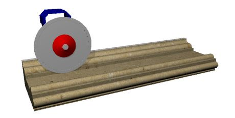 |  |
Profilo Arcato
Per profili curvilinei l’orientamento è vincolato dal tipo di profilo:
Tipo di lavorazione | Orientamento Verticale | Orientamento Orizzontale |
Concava | 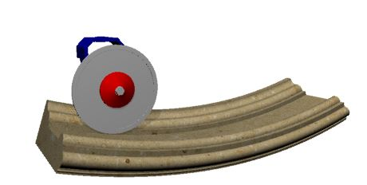 | 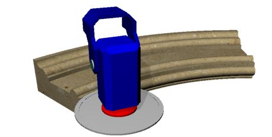 |
Convessa | 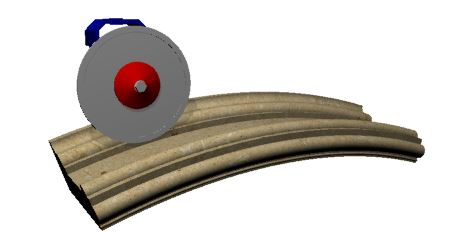 | 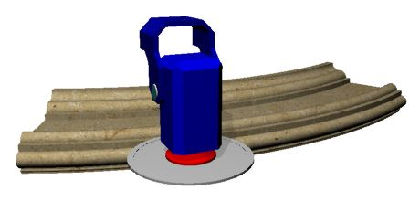 |
La lavorazione può essere eseguita in due modalità:
Per tagli
Spatolato
Per tagli
Nella modalità Per tagli vengono eseguiti tagli paralleli che seguono il profilo selezionato; i parametri seguenti ne definiscono passo, estensione e direzione.


Parametri
Passo | Indica la distanza fra la posizione di un taglio e di quello adiacente. Se superiore allo spessore del disco rimarrà del materiale fra le passate. |
Sovramateriale | Spessore del materiale da lasciare sopra la sezione finale desiderata. |
Allungo inizio / fine | Permette di estendere il taglio nella parte iniziale o finale del valore impostato. |
Più Auto | Se abilitato, incrementa automaticamente il valore di allungo in base al calcolo previsto dal sistema. |
Direzione tagli | Definisce il verso di esecuzione dei tagli, da destra verso sinistra oppure da sinistra verso destra, in funzione della configurazione selezionata. |
Spatolato
Nella modalità Spatolato il movimento è trasversale alla direzione del profilo ed è utilizzato per la finitura superficiale del pezzo.
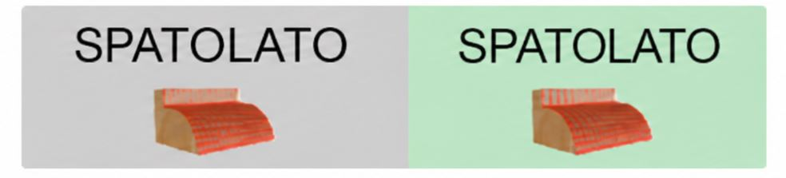

Parametri
Passo di spatolamento | Indica la distanza tra un movimento trasversale e il successivo lungo la direzione del profilo. |
Sovramateriale | Spessore del materiale da lasciare sopra la sezione finale desiderata. |
In base alle selezioni precedenti appaiono diversi menù per la selezione dei parametri necessari a definire la lavorazione.
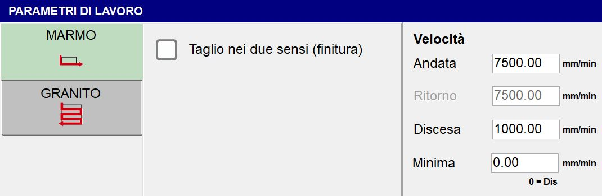
Configurazione per tagli
Se il tipo di lavorazione selezionata è la Configurazione per Tagli, saranno disponibili due tipologie di parametri di lavoro:
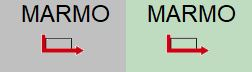 | Modalità Marmo |
 | Modalità Granito |
Modalità Marmo
Parametri generali:
Tagli nei due sensi (finitura) | Questo flag permette di impostare una velocità di ritorno diversa dalla velocità di andata. |
Non alzare mai (finitura) |
Parametri di velocità (nella modalità MARMO è possibile selezionare la lavorazione sia in andata che in ritorno, impostando velocità diverse):
Andata | La velocità di esecuzione di andata della passata. |
Ritorno | La velocità di esecuzione di ritorno della passata. |
Penetrazione | La velocità di esecuzione di penetrazione della passata. |
Minima | Impostando un valore diverso da zero la velocità di taglio dipenderà dalla profondità del taglio stesso, si avrà quindi un movimento a velocità di andata per tagli a profondità nulla e a velocità minima quando il taglio è alla massima profondità per la sezione selezionata. |
Modalità Granito
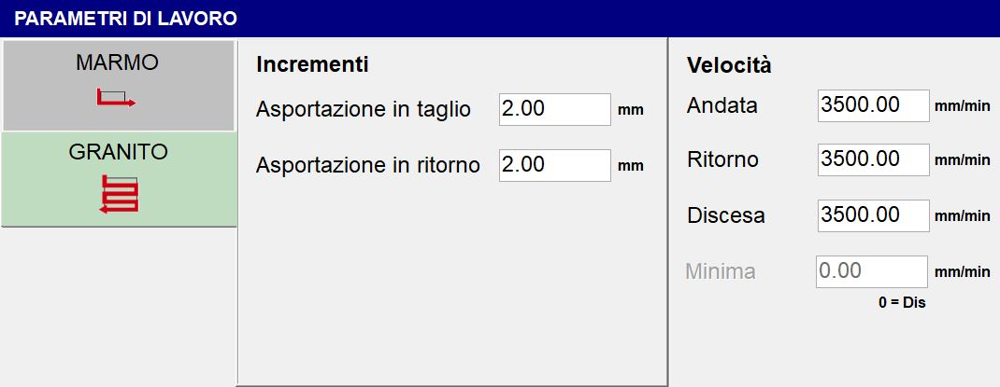
Parametri generali:
Asportazione in taglio | Quantità di materiale che viene asportata nella passata di andata. |
Asportazione in ritorno | Quantità di materiale che viene asportata nella passata di ritorno. |
Configurazione Spatolato
Se il tipo di lavorazione selezionata è la Configurazione Spatolato, sarà disponibile un unico parametro di lavoro:
Velocità - Lavorazione | Imposta la velocità con cui il tipo di lavorazione spatolato verrà eseguita. |
|---|
Tramite il pulsante Parametri di lavorazione (avanzato) è possibile verificare e modificare diversi parametri.
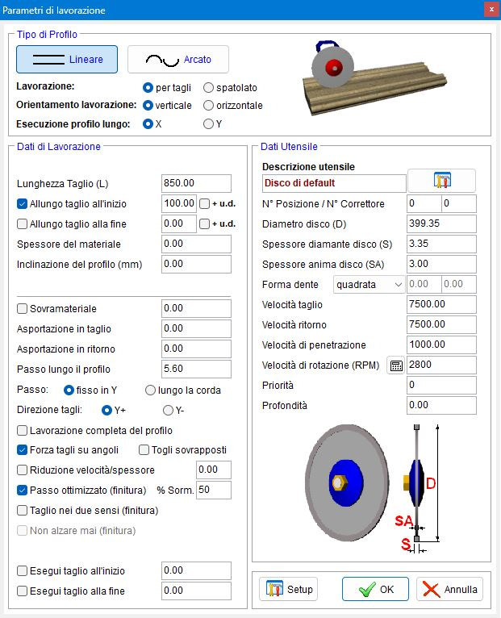
Tipi di profilo
La prima operazione consiste nella selezione del tipo di profilo da utilizzare:
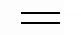 | Lineare |
Arcato |
E successivamente i seguenti parametri:
Lavorazione | Può essere per tagli o spatolato. |
Orientamento lavorazione | La lavorazione può essere eseguita in verticale oppure in orizzontale. |
Esecuzione profilo lungo | Lungo X oppure Y. |
Dati di Lavorazione
Profilo lineare
Per il profilo Lineare è possibile impostare i seguenti parametri:
Spessore del materiale | Definisce la misura dello spessore del materiale (in mm) |
Inclinazione del profilo (mm) | Permette di definire l’inclinazione del profilo indicando la differenza di altezza tra il punto finale ed il punto iniziale. |
Profilo arcato
Per il profilo Arcato sono messi a disposizione i parametri impostabili nei passi precedenti.
Entrambi i profili
Entrambi i profili hanno inoltre i seguenti dati di lavorazione in comune:
Passo | Fisso in Y: mantiene la distanza fissa fra i tagli indipendentemente dalla sezione sottostante |
Direzione tagli | Scelta tra “Y_“ oppure “Y-“. |
Lavorazione completa del profilo | Permette di scegliere se eseguire o meno la lavorazione completa del profilo. |
Forza tagli su angoli | Aggiunge tagli nei punti di variazione di pendenza. |
Togli sovrapposti | Se questo flag è abilitato e il valore “Passo“ è maggiore del valore “Spessore“, verranno eliminati i tagli sovrapposti. |
Passo ottimizzato (tintura) % Sorm. | Se il valore “Passo“ è minore del valore “Spessore“, il passo sarà ottimizzato sulle linee orizzontali. |
Esegui taglio all’inizio | Permette di scegliere se eseguire o meno un taglio all’inizio del profilo. Tramite la casella a fianco è possibile impostare la profondità di questo taglio. |
Esegui taglio alla fine | Permette di scegliere se eseguire o meno un taglio alla fine del profilo. Tramite la casella a fianco è possibile impostare la profondità di questo taglio. |
Dati utensile
La schermata riporta dati già impostati negli step precedenti e parametri specifici dell’utensile.
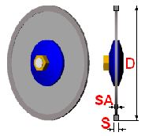
Descrizione utensile | Una rapida descrizione dell’utensile. |
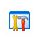 | Magazzino utensili |
N_ Posizione | Indica il numero della posizione all’interno del magazzino dell’utensile selezionato. |
N_ Correttore | Indica il numero che identifica il nome dell’utensile selezionato. |
Spessore anima disco (SA) | Spessore del corpo portante centrale del disco. |
Forma dente | L’operatore potrà scegliere una tra tre forma del dente:
|
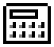 | Scelta materiale
|
Priorità | È possibile stabilire un valore di priorità (rigorosamente positivo). |
Profondità | Indica la profondità del taglio utensile. |
In base alle selezioni precedenti viene visualizzata un’anteprima dei tagli calcolati. La pagina è divisa in diverse aree con i comandi per gestire le modifiche.
Una volta verificati i tagli o effettuate le modifiche desiderate, premere sul pulsante AVANTI per aprire la pagina per generare il programma di taglio.
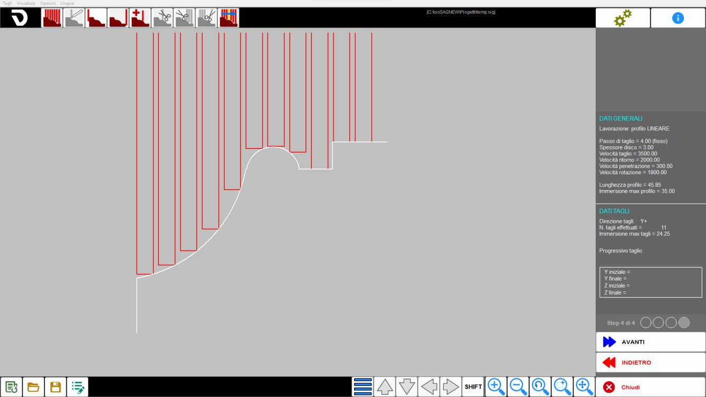
Barra superiore
Generazione tagli | |
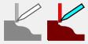 | Modifica la posizione del taglio |
Aggiunge un taglio di testa per separazione dei pezzi | |
Aggiunge un taglio di coda per separazione dei pezzi | |
Aggiunge un taglio nella posizione del mouse (Ins) | |
Elimina il taglio selezionato | |
Elimina i tagli precedenti al taglio selezionato | |
Elimina i tagli successivi al taglio selezionato | |
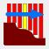 | Simulazione tagli |
Barra laterale destra
Nel quarto step questa barra contiene le seguenti informazioni:
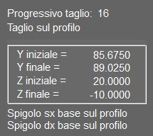 | Progressivo taglio |
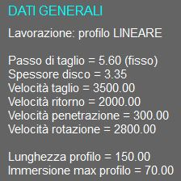 | Dati Generali |
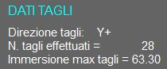 | Dati Tagli |
Barra inferiore
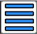 | Opzioni del taglio |
Sposta / allunga tagli | |
/p10_02.png) | Zoom |
Zoom finestra / AUTO zoom |
Al completamento della preparazione nel quarto step, è possibile accedere alla fase finale, che include la visualizzazione del risultato ottenuto e la generazione del file ISO.
Nella parte centrale viene mostrato il 3D della lavorazione generata tenendo in considerazione il modo di lavoro. Cliccando nell’area è possibile ruotare la vista e gestire lo zoom.
Barra laterale
È possibile impostare il nome con cui verrà salvato il file generato e l’origine pezzo a cui il programma farà riferimento.
Crea file ISO | |
Riparti |
Ripetizione
La sagoma preparata può essere ripetuta più volte a distanze definite, in modo da ricavare più pezzi da un singolo blocco di partenza.
Distanza minima |
Barra inferiore
Vista della tavola | |
Luci aggiuntive | |
Zoom | |
Viste predefinite |
Procedura base
Passo 1
Per iniziare, premere il pulsante "Nuova lavorazione". Assicurarsi che la funzione "Tratti connessi" sia attiva, quindi attivare il comando "linea". Procedere con una serie di clic sull’area di lavoro per disegnare la sezione desiderata. Una volta completato il disegno, fare nuovamente clic sul comando "linea" per disattivarlo. A questo punto, selezionare ogni entità individualmente per verificarne e, se necessario, modificarne i parametri.
Passo 2
In questo passo l’operatore può impostare alcune generalità basilari legate al tipo di lavorazione ricercata.
Passo 3
A questo punto è possibile impostare parametri relativi all’utensile, al tipo, orientamento e parametri della lavorazione selezionata.
Nel pannello “Parametri di lavorazione (avanzato)“ inoltre è possibile avere una panoramica di tutti i parametri impostati fino a questo momento.
Passo 4
Viene automaticamente generata una lista di tagli per la lavorazione corrente. È possibile inserire, modificare e rimuovere tagli in relazione alle esigenze operative.
Generazione ISO
Il passo finale della lavorazione permette all’operatore di creare un file ISO dalla lavorazione ottenuta oppure di ricominciare la procedura.
A seconda delle caratteristiche del progetto che si vuole eseguire (tipo di profilo, inclinazione del disco), ci sono diverse modalità di azzeramento.
Profilo lungo X e lavorazione con disco verticale
Asse A: 0_; Asse C: 0_
Asse | Azzeramento dell’origine | Riferimento visivo |
X | Centro mandrino in corrispondenza dell’inizio del profilo. | |
Y | Filo esterno del disco in corrispondenza della fine della sezione (solitamente coincide col lato orizzontale inferiore del grezzo). | |
Z | Disco a sfioro della superficie del materiale. |
Profilo lungo Y e lavorazione con disco verticale
Asse A: 0_; Asse C: 90_
Asse | Azzeramento dell’origine | Riferimento visivo |
X | Filo esterno del disco in corrispondenza della fine della sezione (coincide col lato sinistro del grezzo se si vuole fare una lavorazione sulla parte sinistra del pezzo). | |
Y | Centro mandrino in corrispondenza dell’inizio del profilo. | |
Z | Disco a sfioro della superficie del materiale. |
Profilo con segmento lungo X e lavorazione con disco orizzontale
Asse A: 90_; Asse C: 0_
Asse | Azzeramento dell’origine | Riferimento visivo |
X | Centro mandrino in corrispondenza dell’inizio del profilo. | |
Y | Disco a sfioro del lato orizzontale inferiore del grezzo (fine della sezione). | |
Z | Filo interno del disco all’altezza della superficie del materiale. |
Profilo lungo Y e lavorazione con disco orizzontale
Asse A: 90_; Asse C: 90_
Asse | Azzeramento dell’origine | Riferimento visivo |
X | Disco a sfioro del lato sinistro del grezzo (coincide col lato sinistro del grezzo). | |
Y | Centro mandrino in corrispondenza dell’inizio del profilo (coincide col lato orizzontale superiore del grezzo). | |
Z | Filo interno del disco all’altezza della superficie del materiale. |